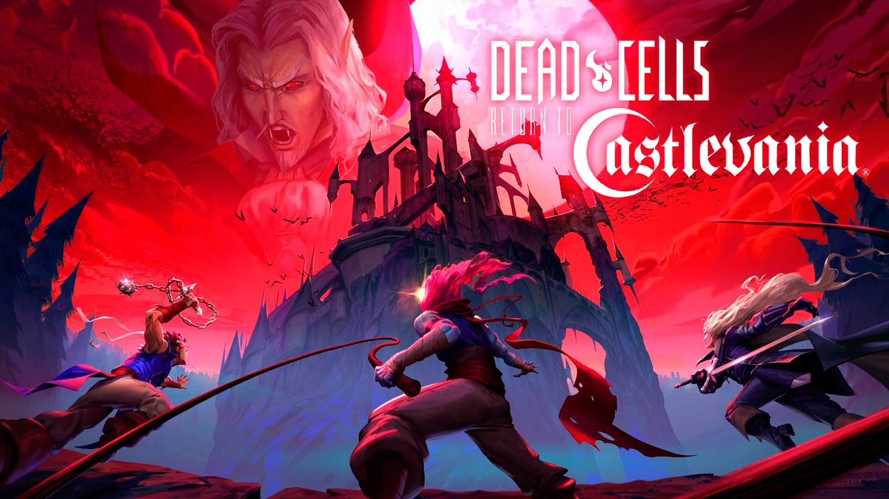

Análisis
Dead Cells
Tras varios años en el mercado y 4 expansiones, Dead Cells continúa creciendo con una más. Una muy especial, ya que Return to Castlevania abre la puerta, tal y como su nombre indica, a la posibilidad de disfrutar de una experiencia capaz de evocar los mejores recuerdos que nos dejó la legendaria saga de Konami, que ya cuenta con más de 35 años a sus espaldas.
Durante los últimos días hemos vuelto al incombustible roguelite de Motion Twin, un título que conocemos perfectamente y al que siempre es buen momento para regresar, ya que estamos hablando de uno de los indies más queridos de la última década. Sólo teníamos una duda: ¿estamos ante un DLC fanservice o realmente tiene algo que aportar a un conjunto que ya de por sí es muy sólido?
Final Fantasy VII: Remake

A los pocos segundos de empezar Final Fantasy 7 Remake, un primer plano se mueve desde las manos de Aeris mientras se va alejando a lo lejos y alto. Esto permite ver como la cámara deja atrás una Midgar gigante. La ciudad industrial en la que sucede el título y donde empezaba el juego original de 1997. La cámara sigue subiendo y Midgar sigue quedando más y más pequeña, a pesar de mostrarse inmensa. Entonces, la cámara vuelve a acercarse, penetrando entre las tuberías de los sectores, llegando hasta el tren del que va a saltar Cloud para arrancar su misión como mercenario. Empieza el Remake de uno de los mejores juegos de la historia.
Esta primera escena es toda una declaración de intenciones. Pone el foco en Aeris, más protagonista que nunca, y sobre todo en lo vasto que es, o pretende ser, la zona de acción del título. Final Fantasy 7 Remake sucede durante los acontecimientos de Midgar, lo que serían unas 6-7 horas del juego original —menos cuando lo hemos rejugado— y lo que suponen unas 30 aquí sin contar misiones secundarias y extras. El juego nos quiere alertar desde un momento que Midgar es gigante, que tiene muchos lugares desconocidos y que ese escenario puede albergar un juego completo de principio a fin.
Elden Ring

Decir que Elden Ring es el Souls más grande es un poco como decir que Breath of the Wild es un Zelda menos lineal que Skyward Sword: incuestionablemente cierto, pero a la vez demasiado superficial como para ilustrar la naturaleza de esa disparidad. From Software se ha venido arriba y no solo ha creado un título nuevo para asombrar y torturar por igual a sus fans, ha dado otro salto evolutivo para la “saga” y su medio. Ha creado un mundo que debe ser jugado durante decenas de horas para ser comprendido y digerido. Porque Elden Ring no solo es un Dark Souls de mundo abierto, es también una nueva vara de medir para la exploración en videojuegos.
Es una sacudida similar a la que vivimos hace unos años con el propio Breath of the Wild —la mención no era arbitraria—, cuando Nintendo también decidió probar suerte con los open world sin medias tintas y sin calcar los modismos de los Skyrim, los The Witcher o los Assassin’s Creed de turno. Su juego, sus reglas. From Software comparte esa filosofía y a veces se regodea en ella de una forma incluso más radical. Porque Elden Ring es más estructurado, no permite correr hacia el jefe final tras completar la primera hora de partida, pero se revela igual de abrumador en su libertad e incluso más confiado en los fundamentos preestablecidos de su fórmula.
God of War: Ragnarok

Uno de los mantras más habituales en los últimos meses es el de que God of War Ragnarök parecía una versión 1.5 del juego que vimos en la primera entrega. Y entendemos los motivos de esas palabras: lo que se ha publicado de forma oficial en tráilers, gameplay o impresiones finales responde y ha respondido siempre a lo que sucede en el juego durante las primeras cinco o seis horas. Y sí, esa parte es muy 2018. Pero lo cierto es que el titulo da un salto cualitativo a todos niveles precisamente a partir de ese momento. Mecánicas, personajes y sorpresas se dan de la mano para elevar God of War Ragnarök a uno de los grandes títulos de la Sony moderna, mejorando todo (o casi) lo que vimos de su predecesor. En la definición de secuela ejemplar, la RAE debería tomar como ejemplo la nueva obra de Santa Monica.
No es una situación nueva, ya que del impacto del primer God of War en PlayStation 2 saltamos a un título netamente mejor en casi todo con God of War II. La saga casi siempre ha navegado en la excelencia porque ha sabido lo que quería hacer y aplicar en cada momento. Con la primera trilogía, se hacía de menos a Kratos cuando se le ponía delante un espejo de juegos tipo hack and slash más puros (dile Devil May Cry, Ninja Gaiden o Bayonetta), pero la grandeza del Dios de la Guerra nunca había estado en ser una obra maestra del combate, sino en ser muy bueno en varias cosas a la vez.
Metal Hellsinger

Entre las múltiples bondades que convierten al videojuego en algo maravilloso, están sus casi infinitas posibilidades, el enorme campo a explorar que ofrece, sus múltiples variantes. Pese a los años que comienza a acumular a sus espaldas, esta bendita forma de entretenimiento digital nunca deja de sorprendernos. Esto ocurre incluso en casos como el de este soberbio Metal Hellsinger que hoy analizamos, un título que se inspira en propuestas ya existentes, como son Bullets Per Minute, Crypt of de NecroDancer o el propio Doom Eternal, pero que sabe dotar al conjunto de un aire fresco y personal para ofrecer una experiencia muy original y propia.
Lo cierto es que el resultado final de esta rompedora obra es el esperado atendiendo a las raíces de sus creadores. Por un lado, tenemos a David Goldfarb, veterano de la industria con experiencia en juegos de disparos en primera persona como Payday 2 o Battlefield 3 y Bad Company 2. Por otra parte, tenemos al estudio The Outsiders, afincado en la Suecia cuna del death metal melódico y del llamado sonido de Gotemburgo que a principios de los 90 desarrollaran bandas como At The Gates, In Flames o Dark Tranquility entre otros. Con estos precedentes, no sorprende que estemos ante un cañero fps de ambientación metalera y demoníaca que supedita su desarrollo al ritmo de la atronadora banda sonora que nos acompañará en todo momento.
Hogwarts Legacy

A los once años, Harry Potter se encontraba en la casa de sus odiosos tíos cuando recibió la carta. Sí, la carta en singular, porque es la misiva que cambió su vida para siempre. Como él, cientos de niños con aptitudes mágicas la han recibido a lo largo de los siglos, siempre a la misma edad... con excepciones. En Hogwarts Legacy, lo nuevo de Warner Bros. Avalanche, el protagonista accede al Colegio Hogwarts de Magia Hechicería en el quinto curso, es decir, a los quince años. Junto a él, el mundo mágico cobra vida y despliega su hechizo.
Avalanche Studios ha construido un RPG de mundo abierto con toques de aventura, que permite encarnar a un estudiante de la famosa escuela. Dentro de la peculiaridad que supone controlar a un aspirante a mago o bruja, la cotidianidad del día a día se plasma en las actividades de la escuela, los minijuegos, las tareas y las obligaciones, que de alguna manera nos recuerdan a nuestra realidad. Se aleja de esa rutina y abraza la extravagancia que le confieren los poderes arcanos.
Hi-Fi Rush

Los focos estaban en Forza Motorsport y en Redfall, pero el Xbox Developer Direct tenía un as bajo la manga que agitó el evento y las redes: Hi-Fi Rush. Un hack and slash y aventura en tercera persona de Tango Gameworks, los padres de Evil Within y Ghostwire Tokyo. Un juego fresco, divertido y desenfadado que nos hizo esbozar una sonrisa con tan solo verlo. Su lanzamiento inmediato en Game Pass y a precio reducido (30 euros) fueron la guinda para una propuesta con la que no hemos dejado de sonreír hasta terminarlo. La primera gran sorpresa del año.
Terminamos el 2022 con dudas respecto al elenco de juegos de Xbox para el próximo curso. tras 12 meses escasos a nivel de exclusividades y una nula presencia en los The Game Awards, se nos prometió -otra vez- que 2023 iba a ser el bueno. Y sabíamos que había nombres en el tintero que debían tirar del carro (como Starfield), pero estábamos expectantes por si quedaban sorpresas por desvelar. La primera, en la frente. El anuncio de Hi-Fi Rush ha sido no solo un agradable descubrimiento por la calidad del título, sino también por la manera en la que nos ha llegado. De forma sorpresiva, sin filtraciones, sin esperarlo y generando una explosión de interés inmediato que pocas veces se consigue con los anuncios. Todo ha salido rodado para que de la nada, una nueva IP captara la atención de prensa y público.

Metal Gear Solid V
La encarnizada venganza del Big Boss tras el ataque mortal de XOF en el prólogo Ground Zeroes culima en un videojuego extraordinario y ejemplar que saca lo mejor de Metal Gear y lo mejor de Hideo Kojima a un nivel de excelencia como nunca antes se había visto. Una superproducción de más de seis años que pasa a convertirse instantáneamente en una nueva Obra Maestra del videojuego.
Snake, Big Boss.El camino de los héroes nunca es sencillo. Por contra, suele estarlleno de reveses, fracasos y derrotas. Hideo Kojima en KojimaProductions al igual que Big Boss con una Mother Base en llamas,colapsada y llena de cadáveres, ha vivido su particular Ground Zeroescon su próxima salida de Konami y el desmantelamiento del estudio con elque se premiaron sus logros. Ese triste capítulo no hahecho más que aportarle un valor nostálgico, de despedida, un adiós, aun trabajo de seis años que bien supone el de toda una vida. Metal GearSolid V: The Phantom Pain es el Juego del Año 2015 e irrumpirá en elmercado como Obra Maestra, culminación de una saga, y consagraciónrepetida del mismo Kojima.